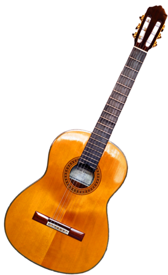
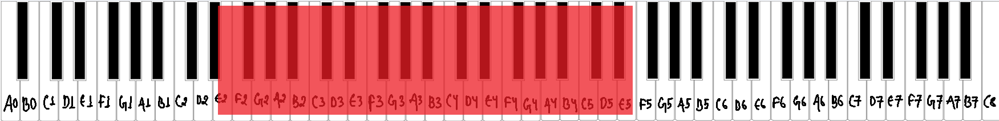
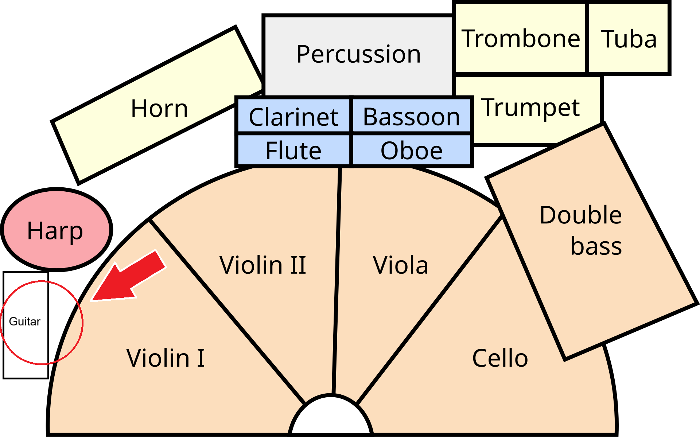
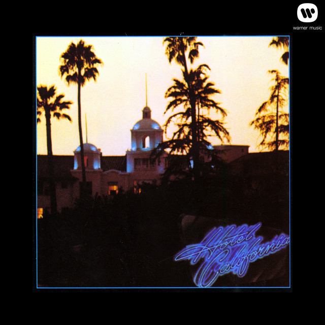
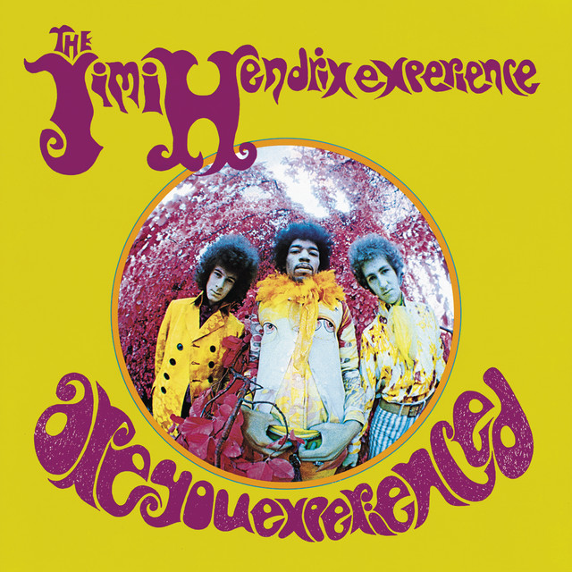
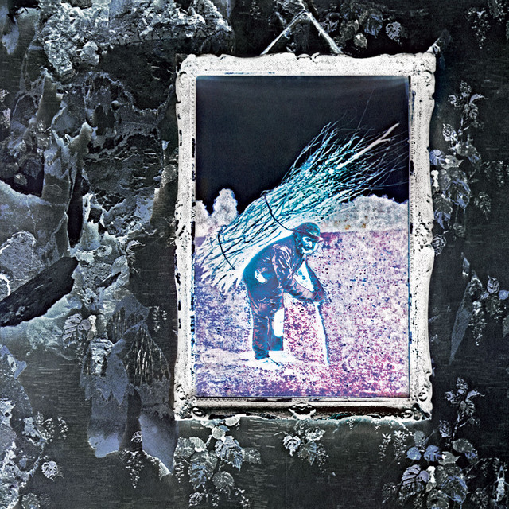
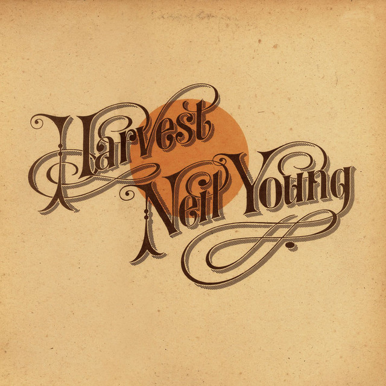

What is a guitar?
The guitar is a plucked stringed musical instrument that probably originated in Spain early in the 16th century, deriving from the guitarra latina, a late-medieval instrument with a waisted body and four strings. From the 16th to the 19th century several changes occurred in the instrument. A fifth course of strings was added before 1600; by the late 18th century a sixth course was added. Before 1800 the double courses were replaced by single strings tuned E–A–D–G–B–E′, still the standard tuning. [1]

Musical range and clef
The comfortable playing range of the Acoustic Guitar spans from E2 to E5. However, advanced players can extend the range to E2-A5 using extended techniques. [2]
The guitar’s music is written in the treble clef. This clef is also used to depict notes to be played by the right hand on a keyboard [3]


Where is the guitarist seated in an orchestra?
Guitars are not a standard part of a traditional symphony or Orchestra lineup, but when a contemporary piece or film score calls for one, the player typically sits near the back with the harp or auxiliary percussion. [4]

Popular songs/pieces that feature the instrument:

Hotel California

Purple Haze

Stairway To Heaven

Heart of Gold
References
- Brittanica, "Guitar".
- Tuneable, "Acoustic Guitar Range".
- Yamaha, "A Guitarist’s Guide to Reading Sheet Music and Tablature".
- WQXR, "Where are the Orchestra's Guitars?".